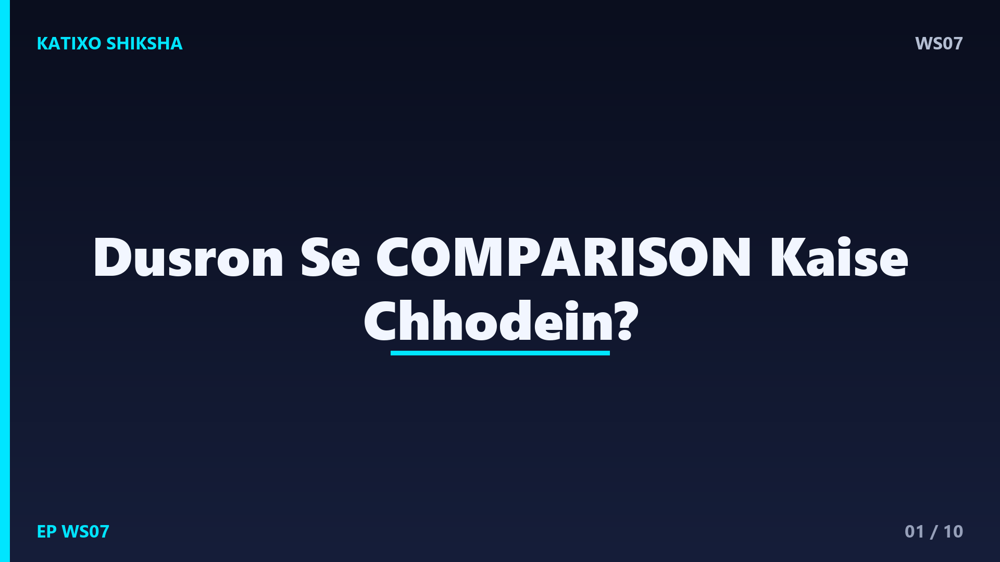
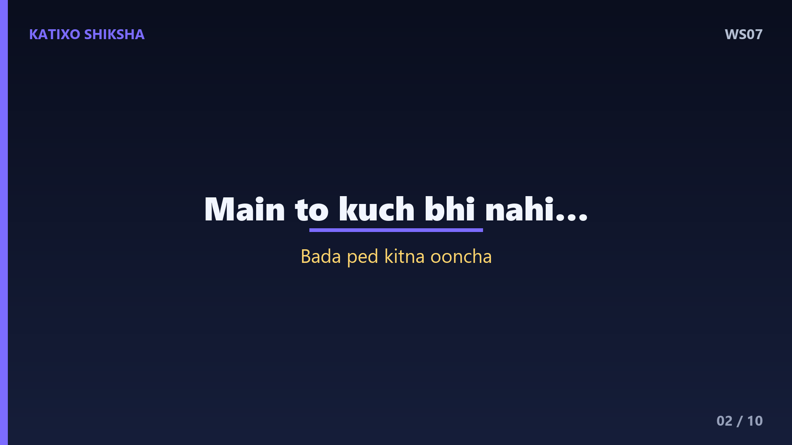
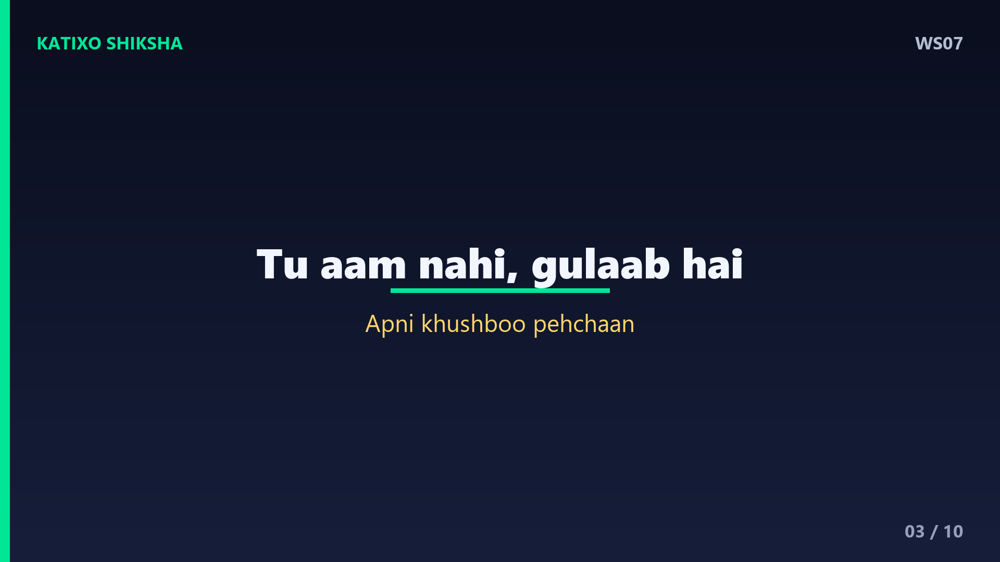
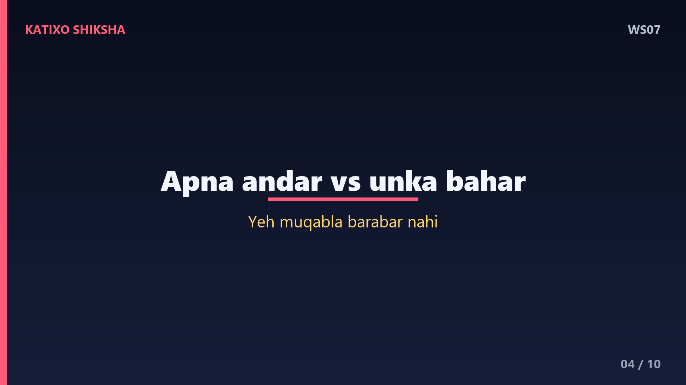
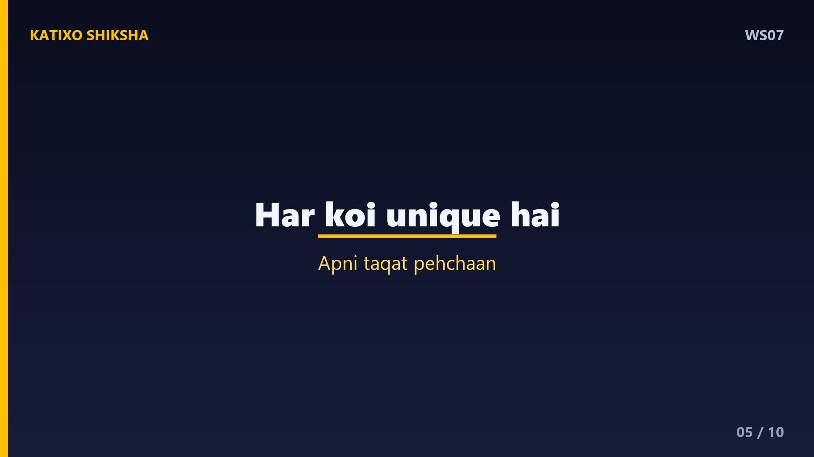
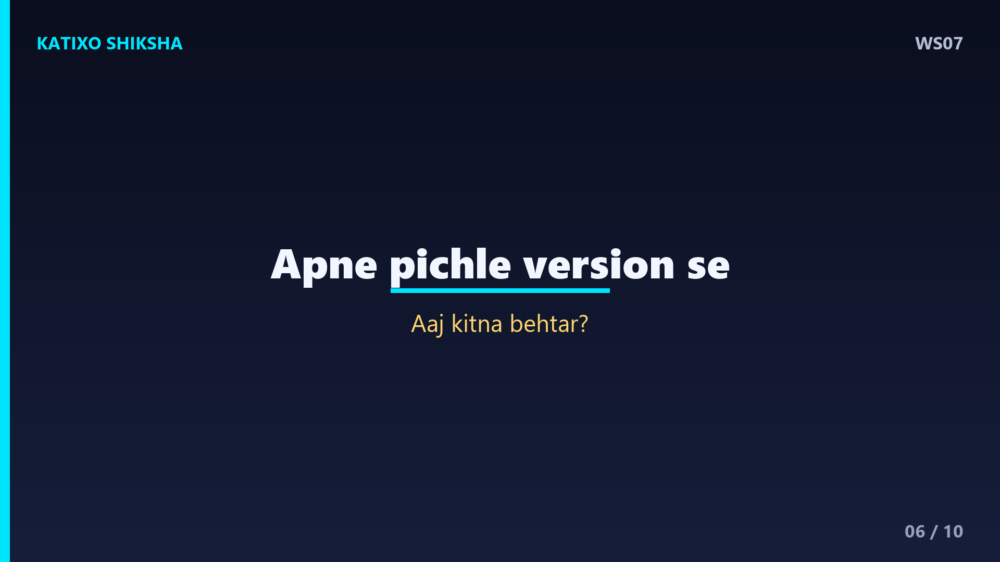
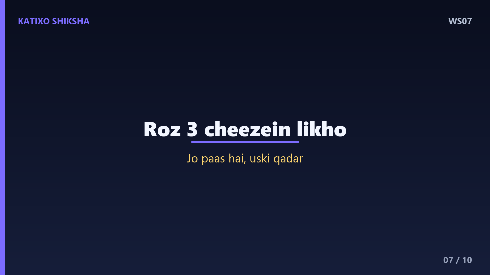
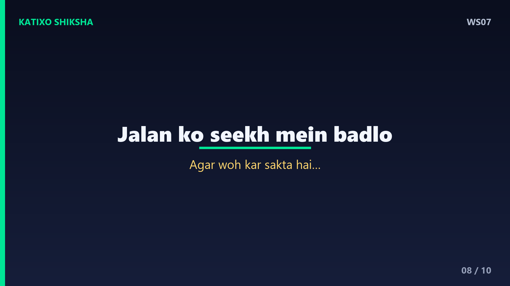
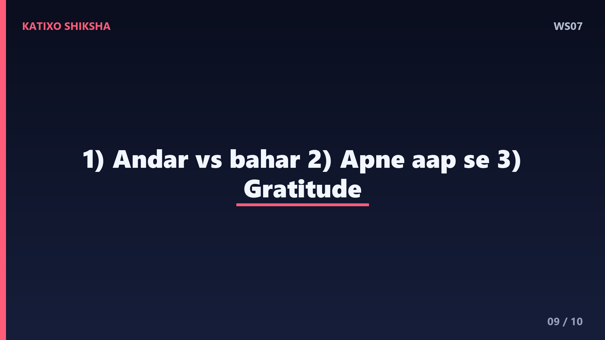
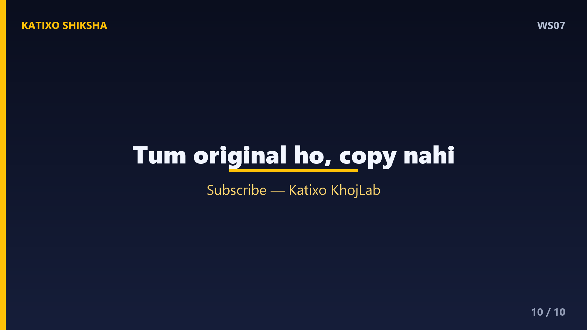

WS07 — Dusron Se Comparison Kaise Chhodein?

Slide 1दोस्तों, क्या कभी ऐसा हुआ है — तुम खुश थे, फिर तुमने किसी और की life देखी, और अचानक तुम्हारी अपनी ज़िंदगी छोटी लगने लगी? किसी के marks, किसी की नौकरी, किसी की photos — और मन उदास हो गया? Welcome to Katixo KhojLab. आज हम बात करेंगे एक ऐसी आदत की, जो चुपके से तुम्हारी ख़ुशी चुरा लेती है — comparison. आज की कहानी में तुम सीखोगे कि इस जाल से कैसे निकलें. चलो शुरू करते हैं।

Slide 2एक बार एक छोटा पौधा एक बड़े आम के पेड़ के नीचे उगा. हर दिन वो ऊपर देखता और सोचता — ये पेड़ कितना ऊँचा है, कितने फल देता है, और मैं? मैं तो कुछ भी नहीं. वो अपनी छोटी पत्तियों से नफ़रत करने लगा. इतना दुखी हुआ कि उसने बढ़ना ही बंद कर दिया. एक दिन एक बूढ़े माली ने उसकी बात सुनी और मुस्कुराया, बोला — बेटा, तुझे पता है तू है क्या?

Slide 3माली बोला — तू कोई आम का पेड़ नहीं है. तू एक गुलाब का पौधा है. तू ऊँचा नहीं होगा, पर तू ऐसे फूल देगा जो ये आम का पेड़ कभी नहीं दे सकता. तेरी ख़ुशबू से पूरा बगीचा महकेगा. तू आम बनने की कोशिश में अपना गुलाब होना भूल गया. पौधे को बात समझ आई. उसने ऊपर देखना छोड़ दिया, और अपने अंदर देखना शुरू किया. कुछ महीनों में वो सबसे सुंदर गुलाब बन गया।

Slide 4Lesson नंबर एक — comparison इसलिए unfair है क्योंकि तुम अपने अंदर को दूसरों के बाहर से नापते हो. तुम अपनी थकान, अपना डर, अपनी मेहनत जानते हो — पर दूसरों की सिर्फ़ सजी-सँवरी तस्वीर देखते हो. Social media पर लोग अपने highlights दिखाते हैं, अपने आँसू नहीं. किसी की best photo से अपनी normal ज़िंदगी की तुलना करना, ये तो शुरू से ही हारी हुई बाज़ी है. ये मुक़ाबला बराबरी का है ही नहीं।

Slide 5Lesson नंबर दो — हर इंसान का अपना रास्ता, अपनी रफ़्तार और अपना समय है. जैसे आम और गुलाब दोनों अलग हैं, वैसे तुम भी unique हो. किसी को सफलता बीस की उम्र में मिलती है, किसी को चालीस में. कोई पढ़ाई में आगे है, कोई दिल का बहुत अच्छा. अगर तुम मछली से कहोगे कि पेड़ पर चढ़, तो वो ख़ुद को नाकाम समझेगी. तुम्हारी ताक़त को पहचानो, उसी पर ध्यान दो।

Slide 6अब एक practical technique — इसे कहते हैं compare with your past self. दूसरों से नहीं, अपने पिछले version से अपनी तुलना करो. क्या तुम पिछले साल से कुछ बेहतर हो? कुछ नया सीखा? एक छोटी आदत सुधरी? बस यही असली progress है. रोज़ रात को एक छोटा सा सवाल पूछो — आज मैं कल से किस चीज़ में थोड़ा बेहतर हुआ? ये सवाल तुम्हारा focus बाहर से हटाकर अंदर ले आता है।

Slide 7Technique नंबर दो — gratitude list बनाओ. जब भी comparison का मन करे, रुको और तीन चीज़ें लिखो जो तुम्हारे पास हैं और जिनके लिए तुम शुक्रगुज़ार हो. हो सकता है किसी के पास बड़ी कार हो, पर तुम्हारे पास सेहत हो, अच्छे दोस्त हों, एक प्यार करने वाला परिवार हो. Science कहती है कि gratitude practice से दिमाग का वो हिस्सा active होता है जो ख़ुशी पैदा करता है. जो है उसकी क़दर करो, जो नहीं उसका दुख कम होगा।

Slide 8एक ज़रूरी बात — कभी-कभी comparison को inspiration में बदला जा सकता है. अगर किसी को आगे देखकर तुम्हें जलन होती है, तो वो ज़हर है. पर अगर तुम सोचो — अगर वो कर सकता है, तो मैं भी सीख सकता हूँ — तो वही comparison तुम्हारा teacher बन जाता है. फ़र्क सोच का है. किसी की success से छोटा महसूस मत करो, बल्कि उससे सीखो, और अपने रास्ते पर लौट आओ. Jealousy को curiosity में बदलो।

Slide 9चलो आज की तीन सबसे बड़ी सीख याद कर लें. पहली — अपने अंदर को दूसरों के बाहर से मत नापो, ये मुक़ाबला बराबरी का नहीं है. दूसरी — अपनी तुलना अपने पिछले version से करो, न कि किसी और से. और तीसरी — gratitude पर ध्यान दो, और जलन को सीख में बदल दो. ये तीन बातें तुम्हारी चुराई हुई ख़ुशी तुम्हें वापस लौटा देंगी।

Slide 10याद रखना दोस्तों — तुम इस दुनिया में किसी की copy बनने नहीं आए हो. तुम एक original हो, और original की कोई कीमत नहीं होती. गुलाब को आम बनने की ज़रूरत नहीं, उसे बस सबसे अच्छा गुलाब बनना है. आज से ऊपर देखना छोड़ो, अंदर देखना शुरू करो. अगर ये कहानी तुम्हें पसंद आई, तो Like, share, aur Katixo KhojLab ko subscribe karna mat bhoolna. Milte hain agli kahani mein!